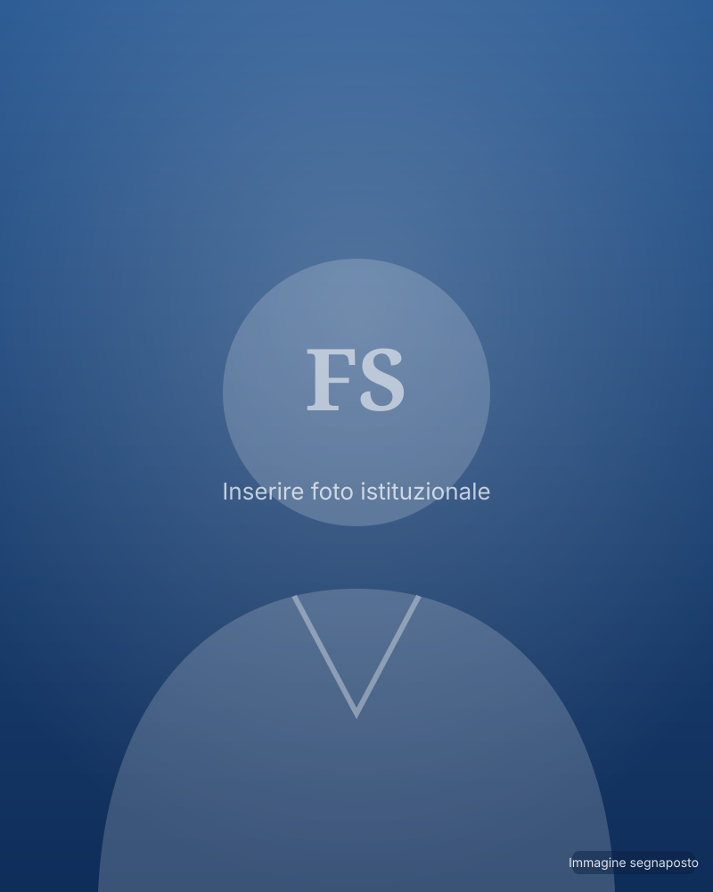

Ambiente da proteggere
Bonifiche, difesa del suolo, controlli ambientali più efficaci e tutela della costa e del mare.
Dalla costa di Barcola alle aree industriali da risanare, ogni scelta nasce da un principio semplice: proteggere ciò che abbiamo ereditato e consegnarlo migliore a chi verrà dopo di noi.

Fonte dell’impegno 2026: manovra estiva regionale, Italpress, 23 luglio 2026. I dati contrassegnati in rosso vanno confermati con atti ufficiali prima della pubblicazione.
Il lavoro dell’Assessorato si muove lungo tre linee che si tengono insieme: tutelare l’ambiente, garantire energia accessibile, sostenere le comunità.
Bonifiche, difesa del suolo, controlli ambientali più efficaci e tutela della costa e del mare.
Diversificazione delle fonti, comunità energetiche rinnovabili e sostegno concreto a famiglie e imprese.
Impianti sportivi più efficienti, sostegno al benessere animale, attenzione alle identità locali.
È facile programmare ciò che gli elettori potranno vedere immediatamente; è più difficile, ma molto più importante, compiere scelte i cui risultati matureranno fra dieci, venti o trent’anni.
Cittadini, associazioni e amministratori locali possono scrivere direttamente all’Assessore. Ogni messaggio viene letto e preso in carico dalla segreteria.